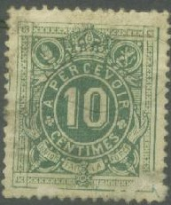
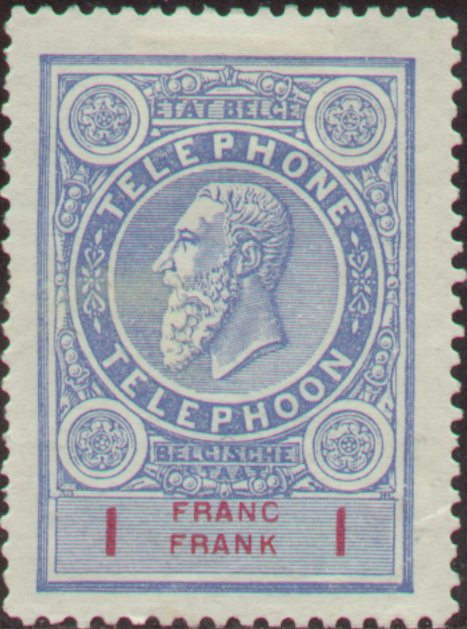
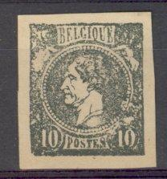

(Reduced size)
Return To Catalogue - Belgium - Belgium Fiscal, Postal Stationary and Miscellaneous - Belgium Railway stamps
Note: on my website many of the
pictures can not be seen! They are of course present in the
catalogue;
contact me if you want to purchase it.

10 c green 20 c blue
Value of the stamps |
|||
vc = very common c = common * = not so common ** = uncommon |
*** = very uncommon R = rare RR = very rare RRR = extremely rare |
||
| Value | Unused | Used | Remarks |
| 10 c | * | * | Bisected: * |
| 20 c | * | * | |
The 10 c green was also used bisected, example:
(Reduced size)

5 c green 10 c brown 10 c red (1900) 20 c green 30 c blue (1909) 50 c brown 50 c grey (1900) 1 F red 1 F yellow (1900)
Value of the stamps |
|||
vc = very common c = common * = not so common ** = uncommon |
*** = very uncommon R = rare RR = very rare RRR = extremely rare |
||
| Value | Unused | Used | Remarks |
| 5 c | vc | vc | |
| 10 c brown | * | * | |
| 10 c red | * | vc | |
| 20 c | vc | vc | |
| 30 c | c | c | |
| 50 c brown | * | * | |
| 50 c grey | * | c | |
| 1 F red | *** | *** | |
| 1 F yellow (orange) | * | * | |

5 c green 5 c grey 10 c red 10 c green (was also issued in bluish green) 20 c olive 20 c brown 30 c blue 30 c red (two shades of color were issued) 35 c green 40 c brown 50 c grey 50 c blue 50 c black 60 c red 70 c brown 80 c grey 1 F violet 1 F lilac 1.20 F olive 1.40 F grey 1.50 F grey 1.60 F lilac 2 F lilac 3.50 F blue
Ordinary stamps overprinted with a 'T' were also used as postage due stamps, examples:
(reduced sizes)

50 c grey 1 F green
In 1966 some imperforate reprints were made, one of each stamp in a minisheet with 1866 1966 in the middle.


10 c violet 25 c green 50 c brown 60 c olive 80 c black 1 F red 5 F blue
The 10 c, 25 c, 50 c, 1 F and 5 F exist in two types; with solid background (1871) and with lined background (1897). The values upto 1 F were also used on express letters. Stamps with pencancels and normal cancel are used as telegraph stamps.

Typical telegraphic cancels.
5 c grey 5 c brown
These stamps were also used on express letters.
Here with 'SPECIMEN' overprint
25 F green and red
A forgery of this stamp is mentioned in the Serrane Guide.

20 mots (=words) 50 cent
3 types of this label exist: the above one (1865), one with larger inscriptions (1866) and one with the lion facing the right (1875). I don't know what the exact status of these labels was.

(Reduced size)
10 c black
1.75 F blue 2.35 F red 3.50 F lilac 5.25 F olive
2.45 F green Surcharged '2.50 fr x' (red) on 2.45 F green (1932)

4 F yellow 5 F light brown

3 F brown 4 F grey 5 F red 6 F lilac (1930) Surcharged 'X 4 4 X' on 6 F lilac (1933)
50 c blue (Ostende) 1.50 F brown (St.Hubert) 2 F green (Namur Namen) 5 F red-brown (Bruxelles Brussel) 5 F violet (for airmail to Belgian Congo, rare) Surcharged (1935) 1 F (red) on 1.50 F grey 4 F (blue) on 5 F brown
50 c stamp with red overprint "SERVICE POSTAL AERIEN ANVERS-
MALMOE VLIEGPOST DIENST ANTWERPEN MALMOE"
I've seen a pair of imperforate 50 c stamps. I've also seen some 50 c stamps, with red overprint "SERVICE POSTAL AERIEN ANVERS- DUSSELDORF VLIEGPOST DIENST ANTWERPEN DUSSELDORF" or "SERVICE POSTAL AERIEN ANVERS- MALMOE VLIEGPOST DIENST ANTWERPEN MALMOE".

(1 Fr blue, value in red)
25 c violet and black 30 c olive and black 50 c green and black 90 c brown and black 1 F blue and red 2 F brown and black 3 F red and blue 3.75 F lilac and blue
Tete-beche stamps exist (with a white margin in between the two stamps).
I have seen reprints of these stamps (also without the value inscription). All the values I have seen were printed in tete-beche columns (quite far apart) and imperforate, examples:



Essay of a railway stamp 'TRANSPORT DES PETITS COLIS TIMBRE
ADHESIF'
{kind=link}
{kind=link}
{kind=link}
{kind=link}